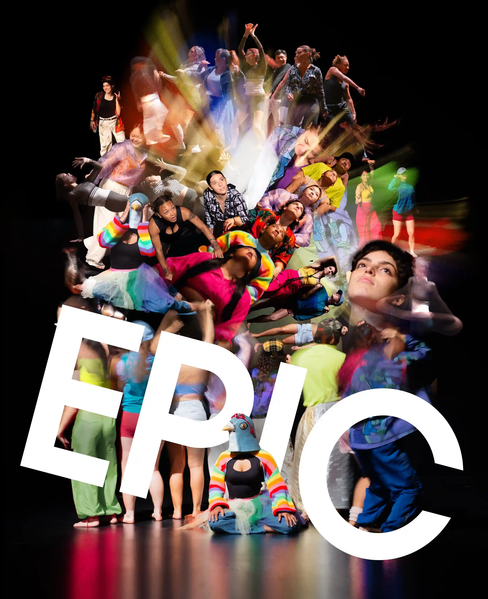
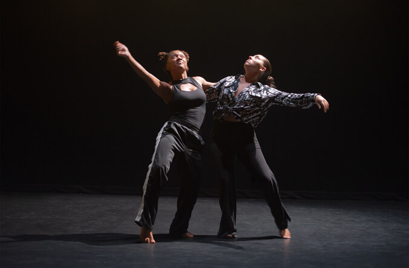

University of Hawaiʻi at Mānoa · Kennedy Theatre
EPIC
Performer · Dance TheatreI perform in EPIC, a dance-theatre production directed by Pei-Ling Kao at the University of Hawaiʻi at Mānoa. Created with Sunny Nai-Hsuan Yang and the cast, the work brings different dance forms and bodies together through movement.

Production
Earle Ernst Lab Theatre, Kennedy Theatre · Honolulu, Hawaiʻi
- Performer
- Zhenhao Wen
- Director
- Pei-Ling Kao
- Choreography
- Pei-Ling Kao in collaboration with Sunny Nai-Hsuan Yang (Les Petites Choses Production, Taiwan) and the cast members
- Presented by
- Department of Theatre and Dance, University of Hawaiʻi at Mānoa
- Production dates
- 30 September–4 October 2026
University coverage
UH News · 30 September 2026
UH News featured EPIC in its Image of the Week series, with a production photograph shared by Kennedy Theatre operations coordinator Christine Lamborn Fernandez.

The production also appeared in the university’s weekly arts and culture listings.